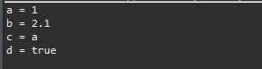
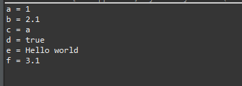
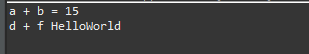
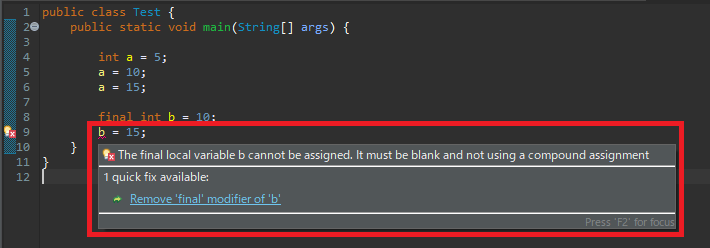

[Java] 2. 変数と定数の宣言方法、そして原始データタイプとクラスデータタイプの差異
こんにちは。明月です。
この投稿は変数と定数の宣言方法、そして原始データタイプとクラスデータタイプの差異に関する説明です。
プログラムを始めに習う時に一番初めに説明することはこの変数と定数を宣言することではないかと思います。
変数と定数というのはプログラム中で宣言する方法、使い方法だけの差異があることで実際にシステムの中では同じ意味のキーワードです。それで一応、説明をしやすくするためにすべて変数ということで説明します。
パソコンは大きく見ればCPUとメモリ、ハードディスクに構成しているし、一般的なIO(Input、output)装置でモニター、キーボード、マウスがあります。
CPUとは演算する装置だし、メモリとハードディスクはデータを格納する装置です。メモリとハードディスクはパソコンやプログラムが終了してもデータが保存されるか消滅するかの差異があります。
ここで我々がプログラムを作成する時、メモリにデータを一時的に保存する必要があります。それがプログラム言語で変数の役割です。
変数のタイプは(Primitive type基準)大きく見れば整数型、実数型、文字型、ブール型に分けます。
整数型ではint、byte、short、longタイプがあり、実数型はfloat、doubleタイプがあります。文字型はcharタイプがります。ブール型の場合は真偽の区分でbooleanタイプがあります。
ここで私の経験上でよく使うデータタイプはint、byte、booleanがあり、たまにcharタイプを使うことがあります。小数点以下のデータを表現するためにはfloatとdoubleを使いますが、最近は「浮動小数点誤差」というバグではないバグがありますが、それのせいで計算上にエラーが発生する時があるのでBigDecimalを使います。(BigDecimalはPrimitive typeではなくクラスタイプです。)
| データタイプ | 説明 |
|---|---|
| 文字型データタイプ | |
| char | 16ビッドユニーコード文字(アスキーコード参考) |
| string | byte(unsigned char)タイプになっているユニーコード文字列タイプクラス |
| ブール型データタイプ | |
| boolean | 真(true)、 偽(false)タイプの論理データタイプ |
| 整数型データタイプ | |
| byte | 数の範囲が-128~127になっているデータタイプ |
| short | 数の範囲が-32,768~32,767になっているデータタイプ |
| int | 数の範囲が-2,147,483,648~2,147,483,647になっているデータタイプ |
| long | 数の範囲が-9,223,372,036,854,755,808~9,223,372,036,854,755,807になっているデータタイプ |
| 実数型データタイプ | |
| float | 数の範囲が±1.5*10-45~±3.4*1038になっているデータタイプ |
| double | 数の範囲が±5.0*10-324~±1.7*10308になっているデータタイプ |
| decimal | 数の範囲が±1.0*10-28~±7.9*1028になっているデータタイプ |
Javaは原始データタイプ(Primitive type)とクラスデータタイプを区分しております。これはintタイプとIntegerタイプは別のタイプでintタイプはnullを許せないですが、Integerはnullを許す整数型タイプです。
変数の宣言は変数タイプを前に置いて変数名を作成することで宣言します。変数の値を入れる時にはイコール(equal, =)の記号を使ってデータを入れます。
public class Test {
// 実行関数
public static void main(String[] args) {
// 整数型 int、変数名 a
int a;
// 実数型 float、変数名 b
float b;
// 文字型 char、変数名 c
char c;
// ブール型 boolean、変数名 d
boolean d;
// 値を入れる時はイコールを使う。
// aは整数型なので整数値を入れる。
a = 1;
// bは実数型なので実数値を入れる。(ここでfloat型はfを、double型はdを数字の後に置く。)
b= 2.1f;
// cは文字型なので一文字を入れる。(文字は引用符、文字列は二重引用符で区分する。文字列はcharタイプに入れない。)
c = 'a';
// dはブール型なのでtrue、falseで値を入れる。
d = true;
// コンソール出力
System.out.println("a = " + a);
System.out.println("b = " + b);
System.out.println("c = " + c);
System.out.println("d = " + d);
}
}

クラス型タイプはユーザが作成することができる部分なので、原始データタイプと比較しながら説明します。
整数型ではInteger、Byte、Short、Longがあります。実数型はFloat、Doubleがあり、文字型はCharacterがあります。ブールはBooleanがあります。
追加事項で文字列はStringがありBigDecimalの文字実数型があります。原始データと差異といえば原始データは小文字で始まりますが、クラスタイプは大文字にキーワードが始まります。
// BigDecimal型を使うためにクラスを宣言すべきだ。
import java.math.BigDecimal;
public class Test {
// 実行関数
public static void main(String[] args) {
// 整数型 Integer、変数名 a
Integer a;
// 実数型 Float、変数名 b
Float b;
// 文字型 Character、変数名 c
Character c;
// ブール型 Boolean、変数名 d
Boolean d;
// 文字列型 Boolean、変数名 e
String e;
// 文字実数型 BigDecimal、変数名 f
BigDecimal f;
// 値を入れる時はイコールを使う。
// aは整数型なので整数値を入れる。
a = 1;
// bは実数型なので実数値を入れる。(ここでfloat型はfを、double型はdを数字の後に置く。)
b= 2.1f;
// cは文字型なので一文字を入れる。(文字は引用符、文字列は二重引用符で区分する。文字列はcharタイプに入れない。)
c = 'a';
// dはブール型なのでtrue、falseで値を入れる。
d = true;
// eは文字列型なので文字列を入れる。
e = "Hello world";
// BigDecimalは自動operation変換式がない。なのでnewを使うべき。
// 文字実数型。整数型や実数型でも入れることが可能。でも、誤差をなくすために文字列がおすすめ。
f = new BigDecimal("3.1");
// コンソール出力
System.out.println("a = " + a);
System.out.println("b = " + b);
System.out.println("c = " + c);
System.out.println("d = " + d);
System.out.println("e = " + e);
System.out.println("f = " + f);
}
}

変数は単純に値を入れることではなく、読み取って計算することもできるし再代入することはできます。文字列は文字列を合わせることもできます。
public class Test {
// 実行関数
public static void main(String[] args) {
// 整数宣言
int a = 5;
Integer b = 10;
// a(5) + b(10)を加算すれば15になってc変数に格納
int c = a + b;
// コンソール出力
System.out.println("a + b = " + c);
// 文字列宣言
String d = "Hello";
String e = "World";
// d(Hello)とf(World)の文字列を併せてHelloWorldをf変数に格納する。
String f = d + e;
// コンソール出力
System.out.println("d + f = " + f);
}
}

これから変数と定数の差異に関して説明します。
上の例を見れば変数にデータを格納、計算して再代入ができます。定数の場合は最初にデータ格納ができますが、その後に再代入ができません。
public class Test {
// 実行関数
public static void main(String[] args) {
// 一般変数
// 最初に5のデータを格納。
int a = 5;
// 次は10のデータを再格納。
a = 10;
// 15のデータを再格納してもエラーがならない。
a = 15;
// 定数は変数タイプ前にfinalキーワードを置く。
// 10のデータを格納。
final int b = 10;
// 15のデータを再格納するとエラーが発生する。
b = 15;
}
}

コンパイルする段階でエラーが発生します。
プログラムの制約なのでメモリ上でデータが固定にすることではありません。なので実は変数と定数を区分してデータ宣言することは別にパフォーマンスとして別に意味がありません。実プログラムのプロジェクトでもクラスのキャプセル化を利用する変数アクセス制限、修正制限するですが、finalキーワードで設定する場合は多くないです。
C++時代の前処理の利便性で残っている感じです。なので定数の使用方法を知らなくてもプログラムを作成することでは問題ありません。あ！Lambda文法でクロージャ機能のためには使いますね。
変数を宣言する方法と原始データ、クラスタイプデータの差異は確かに知らなければならないです。クラスに関しては次のクラスを説明する時に詳細に説明します。
ここまで変数と定数の宣言方法、そして原始データタイプとクラスデータタイプの差異に関する説明でした。
ご不明なところや間違いところがあればコメントしてください。
- [Java] 15. 列挙型(バイナリデータビット演算子の使用例)2019/08/23 19:46:10
- [Java] 14. オブジェクト指向プログラミング(OOP)の4つ特性(カプセル化、抽象化、継承、多相化)2019/08/22 20:08:37
- [Java] 13. 抽象クラス(abstract)と継承禁止(final)2019/08/22 00:06:20
- [Java] 12. インタフェース(interface)2019/08/20 23:46:23
- [Java] 11. StringのhashCodeとequals、そしてtoStringの再定義(override)2019/08/20 00:42:04
- [Java] 10. メモリの割り当て(stackメモリとheapメモリ、そしてnew)とCall by reference(ポインタによる参照)2019/08/07 20:53:34
- [Java] 9. アクセス修飾子とstatic2019/08/06 20:22:48
- [Java] 8. クラスの継承とthis、superキーワードの使い方2019/08/05 23:22:58
- [Java] 7. クラスを作成する方法(コンストラクタを作成方法)2019/08/02 22:45:42
- [Java] 6. 関数の使い方(関数のオーバーロードと再帰的な方法について)2019/08/01 20:40:40
- [Java] 5. 配列とリスト(List)、マップ(Map)の使い方2019/07/26 23:25:58
- [Java] 4. 制御文2019/07/25 23:37:36
- [Java] 3. 演算子2019/07/25 23:38:36
- [Java] 2. 変数と定数の宣言方法、そして原始データタイプとクラスデータタイプの差異2019/07/24 23:12:32
- [Java] 1. Javaとは？、Javaインストール、Eclipseインストール2019/07/24 23:03:21
- [C#] 58. ウィンドウフォーム(Window form)を作成する方法、そしてウィンドウメッセージとキュー2021/10/27 20:35:44
- [Design pattern] 2-3. ブリッジパターン(Bridge pattern)2021/10/27 20:32:21
- [Design patten] 2-2. コンポジットパターン(Composite pattern)2021/10/27 20:30:54
- [Design pattern] 2-1. アダプターパターン(Adapter pattern)2021/10/26 19:12:40
- [Project design] プログラム最終テスト - ST(System test(Standard, Scenario))2021/10/26 19:10:07
- [Project design] プログラム結合テスト - IT(Integration test)2021/10/25 20:12:17
- [Python] Seleniumライブラリを使う方法(自動ウェブテスト、ウェブスクレイピング)2021/10/25 19:29:00
- [Design pattern] 1-5. プロトタイプパターン(Prototype pattern)2021/10/22 19:35:45
- [Project design] プログラム検証とテスト - Unitテスト2021/10/22 19:34:09
- [C#] 57. コーティング規約2021/10/21 18:57:02
- [C#] 56. 値の初期化及び基本データ値(default)を設定する方法、そして原始データのnull処理、?と??の使い方2021/10/21 18:54:41
- [C#] 55.namespaceとusing、そしてpartialの使い方2021/10/21 18:51:39
- [C#] 54. Reflection機能を使い方 - Attribute2021/10/20 19:29:31
- [Project design] プログラム制作(コーディング) - クラス作成方法2021/10/20 19:28:09
- [C#] 53. Reflection機能を使い方 - Propertyとevent2021/10/19 21:02:58